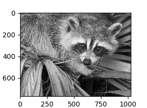
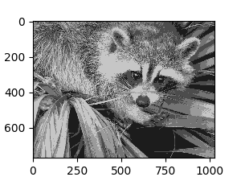
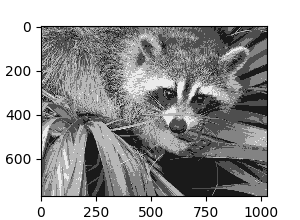
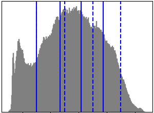

Note
Click here to download the full example code or run this example in your browser via Binder
1.6.6. Vector Quantization Example¶
Face, a 1024 x 768 size image of a raccoon face,
is used here to illustrate how k-means is
used for vector quantization.
- 
- 
- 
- 
print(__doc__)
# Code source: Gaël Varoquaux
# Modified for documentation by Jaques Grobler
# License: BSD 3 clause
import numpy as np
import scipy as sp
import matplotlib.pyplot as plt
from sklearn import cluster
try: # SciPy >= 0.16 have face in misc
from scipy.misc import face
face = face(gray=True)
except ImportError:
face = sp.face(gray=True)
n_clusters = 5
np.random.seed(0)
X = face.reshape((-1, 1)) # We need an (n_sample, n_feature) array
k_means = cluster.KMeans(n_clusters=n_clusters, n_init=4)
k_means.fit(X)
values = k_means.cluster_centers_.squeeze()
labels = k_means.labels_
# create an array from labels and values
face_compressed = np.choose(labels, values)
face_compressed.shape = face.shape
vmin = face.min()
vmax = face.max()
# original face
plt.figure(1, figsize=(3, 2.2))
plt.imshow(face, cmap=plt.cm.gray, vmin=vmin, vmax=256)
# compressed face
plt.figure(2, figsize=(3, 2.2))
plt.imshow(face_compressed, cmap=plt.cm.gray, vmin=vmin, vmax=vmax)
# equal bins face
regular_values = np.linspace(0, 256, n_clusters + 1)
regular_labels = np.searchsorted(regular_values, face) - 1
regular_values = .5 * (regular_values[1:] + regular_values[:-1]) # mean
regular_face = np.choose(regular_labels.ravel(), regular_values, mode="clip")
regular_face.shape = face.shape
plt.figure(3, figsize=(3, 2.2))
plt.imshow(regular_face, cmap=plt.cm.gray, vmin=vmin, vmax=vmax)
# histogram
plt.figure(4, figsize=(3, 2.2))
plt.clf()
plt.axes([.01, .01, .98, .98])
plt.hist(X, bins=256, color='.5', edgecolor='.5')
plt.yticks(())
plt.xticks(regular_values)
values = np.sort(values)
for center_1, center_2 in zip(values[:-1], values[1:]):
plt.axvline(.5 * (center_1 + center_2), color='b')
for center_1, center_2 in zip(regular_values[:-1], regular_values[1:]):
plt.axvline(.5 * (center_1 + center_2), color='b', linestyle='--')
plt.show()
Total running time of the script: ( 0 minutes 2.844 seconds)